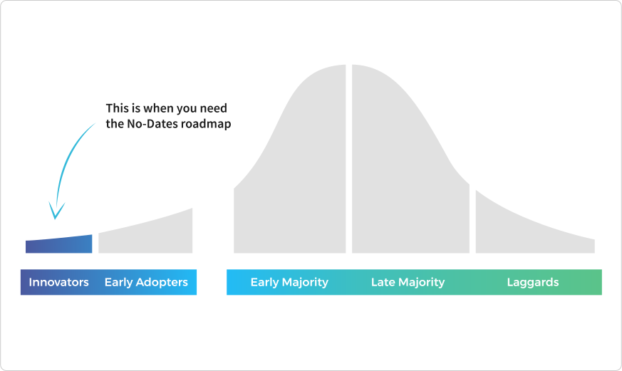
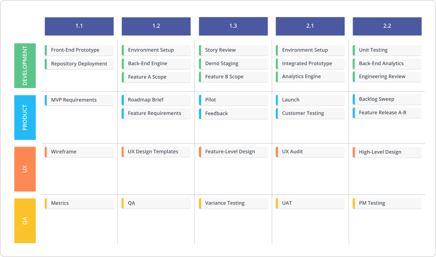
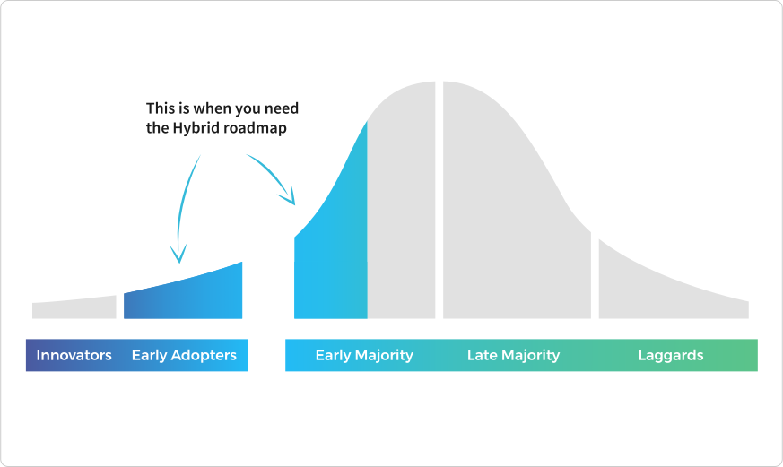
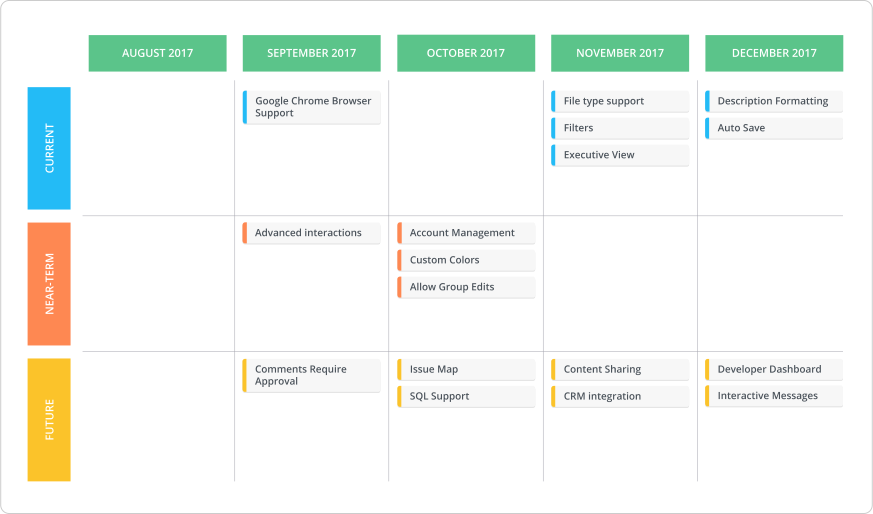
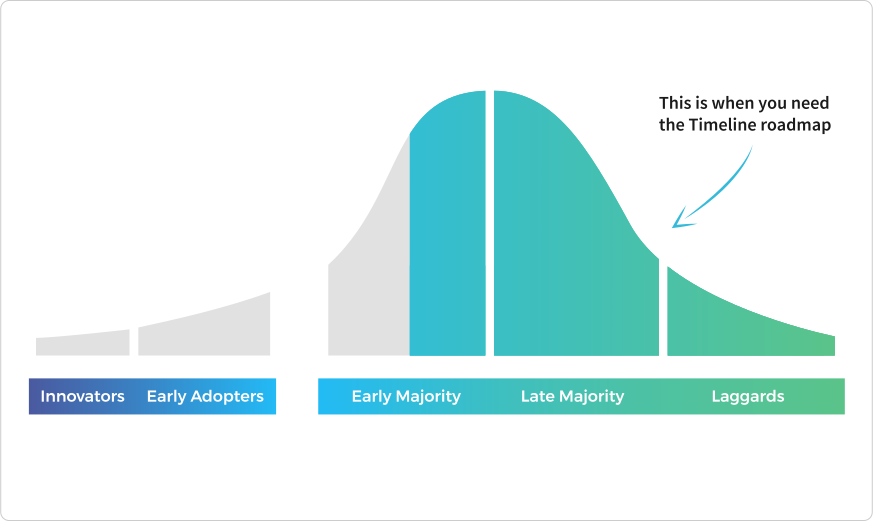
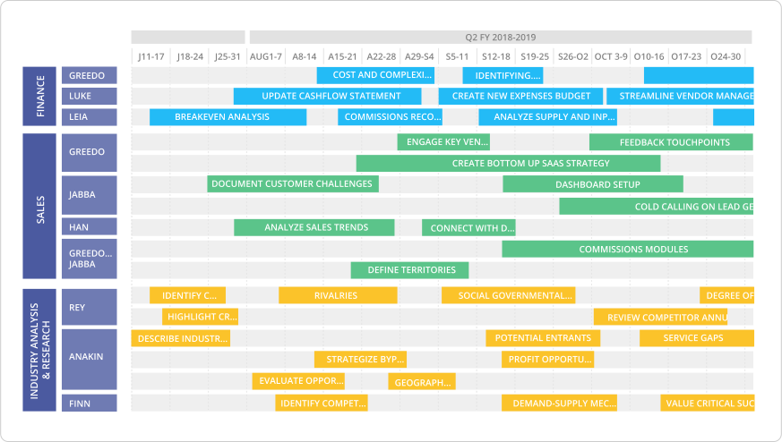

Creating a product roadmap can be done in an infinite amount of ways.
And after speaking to countless product managers, we’ve found that pretty much all product roadmaps fall into one of three basic frameworks.
1. The no-dates roadmap
2. The hybrid roadmap
3. The timeline roadmap
With so many software companies working in agile, the role of time-based planning is often downplayed. But data from our own system suggests that dates are a key factor in roadmapping: 89% of roadmap views built in Roadmunk have at least some representation of time, whether it’s a detailed timeline or broader time buckets displayed in a swimlane.
The way a company creates a product roadmap depends on a big range of factors, including team members’ personal preferences and company culture. But generally, a product roadmap evolves along with the product.
Each of these roadmap types is most effective and appropriate at different phases of the product lifecycle.
1. The no-dates product roadmap
For a lot of companies, especially those with early-stage products being developed in agile, time-based product roadmaps aren’t useful or necessary.
The no-dates product roadmap offers more flexibility than roadmaps built on timelines. They’re helpful for companies whose priorities are constantly shifting. This is usually the case when your product is still in its earliest stages—when you’re processing new information on a week-to-week or even day-to-day basis.
At this volatile stage, dates have little to do with your primary goals: finding product-market fit and finding your first customers. You’re not doing comprehensive long-term planning. (Or at least, you shouldn’t be.) All of your focus is on getting a foothold. That’s why the no-dates product roadmap is most common and appropriate for products whose users are still in the initial stages of the Technology Adoption Lifecycle Model.

Quick refresher on this diagram. In 1991, Geoffrey A. Moore published Crossing the Chasm, a hugely influential book about marketing technology products. Moore says that there are different types of customers who will adopt your product at different stages of its lifecycle.
-
Innovators: Tech enthusiasts who will always be the first to try new things.
-
Early Adopters: Visionaries who are easily sold on new products. They are content with incremental improvements rather than perfection.
-
Early Majority: Also known as “pragmatists.” This crucial section of the mainstream market requires a high level of quality and infrastructure to buy.
-
Late Majority: Also known as “conservatives.” Their needs are similar to those of the Early Majority, but they’re more resistant to purchasing.
-
Laggards: Late-to-the-party skeptics. This group rarely buys technology products.
The Technology Adoption Lifecycle Model was developed in the 1950s, but Moore made an important update to the original diagram. Between the Early Adopters and the Early Majority, he inserted a chasm. Because the needs of the Early Adopters are so different from the needs of the Early Majority, there is a wide gap between these two groups. Also, pragmatists won’t take recommendations from Early Adopters—only other pragmatists—making it much harder to break into the Early Majority.
What does this have to do with building a product roadmap?
In the earliest stages of a product, companies should focus on attracting Innovators. It might be tempting to pursue the Early Majority right out of the gate, but this is a mistake. Innovators and Early Adopters provide essential insights and recommendations that allow a product to grow into the Early Majority.
Innovators are purely interested in trying new technology, and the roadmap should reflect their needs, with a focus on building elegant, visionary tech. At this stage, the roadmap should not reflect the complex organizational infrastructure needed to compel the Early Majority. By avoiding dates, you can keep the focus entirely on building the product—not on arbitrary timelines or deadlines.
In a product’s early days, it can be helpful to create a product roadmap that is organized by owner, theme or sprint, as seen below.

Ready to start roadmapping? Get started with our product roadmap template and make it your own.
2. The hybrid product roadmap
As a product becomes more mature, the product roadmap will need to reflect a more comprehensive view of the company. That’s where the hybrid product roadmap comes in.
The hybrid product roadmap includes dates—but not hard dates. For example, a company might create a product roadmap that is organized by month or quarter. This style of roadmap allows you to plan into the future while maintaining flexibility. It’s most useful when a product is targeting Early Adopters and entering the initial stages of the Early Majority.

At this point in the product lifecycle, a company knows what’s going to get them over the chasm. Things start becoming time-sensitive as they manage demands from customers and start coordinating big deals.
Companies at this stage can’t be purely agile; they can’t ignore the realities of a market that runs on deadlines and speed. They need to start planning for a few months or quarters into the future—say, medium-term. Creating a hybrid product roadmap allows you to be more aggressive with your vision and speak intelligently and transparently to your market—without forcing you into a rigid timeline before it makes sense for your product.
It could look something like the product roadmap below. Items here are plotted by month, and designated as either Current, Near-Term, or Future. By time-boxing projects according to months, you create a loose projection that’s helpful…but not constraining.

Start roadmapping right away with Roadmunk's ready-to-use product roadmap template.
3. The timeline product roadmap
And then there’s the timeline product roadmap. The name is self-explanatory: it’s a product roadmap plotted on a timeline. A complex timeline product roadmap really isn’t helpful or necessary until you’re juggling multiple departments, dependencies and deadlines. This usually doesn’t happen until you’re entrenched in the Early Majority.

At this stage, there are multiple departments working together—and they need a concrete framework by which to coordinate. Marketing can’t look at a no-dates product roadmap and properly plan campaigns. Sales needs to be able to pin commitments on dates, or they won’t be able to close deals. The product team needs to understand—and be accountable to—the needs of other departments.
A timeline product roadmap gives structure to the many, many, many moving parts that must operate in tandem to make a product function within the mainstream market. They also show the product’s long-term vision—since some departments must plan a year or more in advance.
This business roadmap illustrates how large-scale timeline product roadmaps align complex dependencies between multiple stakeholders.

Two things to keep in mind when building a product roadmap
Product roadmaps evolve along with their products. But this is by no means a strict framework. Younger products will often plot their plans on a timeline, while certain departments at large companies may benefit from a no-dates product roadmap (especially within bigger companies that are trying to innovate on themselves). Two things to keep in mind when determining how to create a product roadmap:
1. In an agile world, dates and deadlines are often shunned
“Dates? We don’t do dates in agile.” The no-dates product roadmap can be incredibly valuable—up to a point. It gives you flexibility and keeps you focused on the core goal of building amazing technology. However, when you start working with real customers—and real money—some degree of date-consciousness is essential to succeed in an aggressive market. The hybrid product roadmap can be a really helpful happy medium. It bridges the flexibility of agile with the realities of the world outside your dev team.
For more on agile roadmaps, check out our not boring guide for real-world product managers.
2. It might be tempting to immediately build an intricate timeline product roadmap
Even when you’re still in discovery phase and have no real tangible knowledge of where your product is going, it feels good to create a product roadmap that illustrates all the amazing progress you’re hoping to make. “Sure, we may not have much yet, but look where we’re going!” Downside: this could lock you into a needlessly rigid plan at a time when you don’t have enough information to make an accurate forecast.